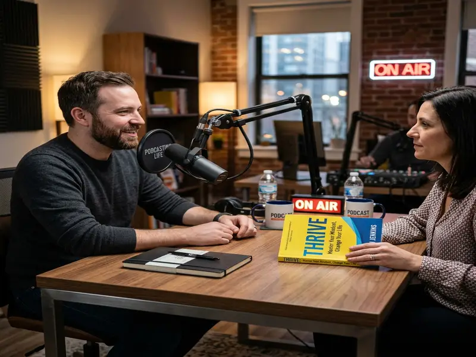
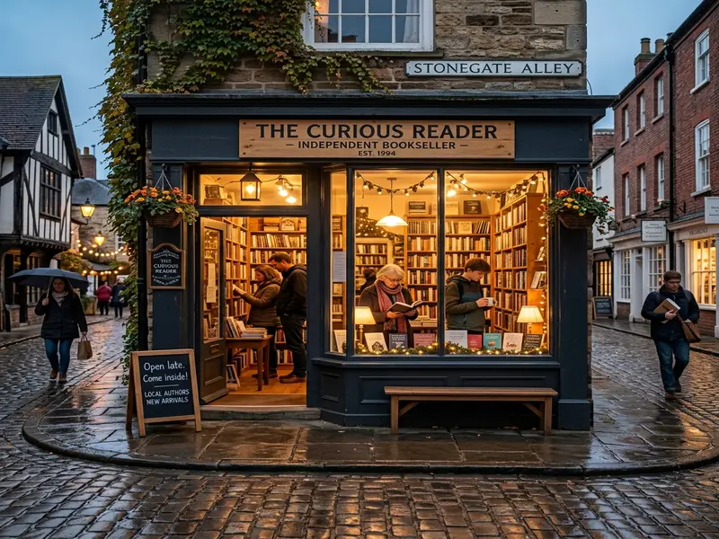
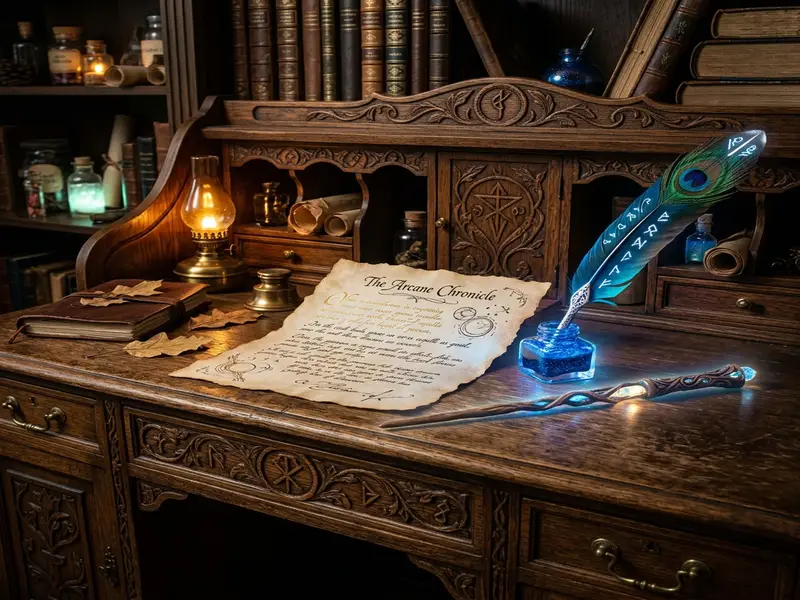
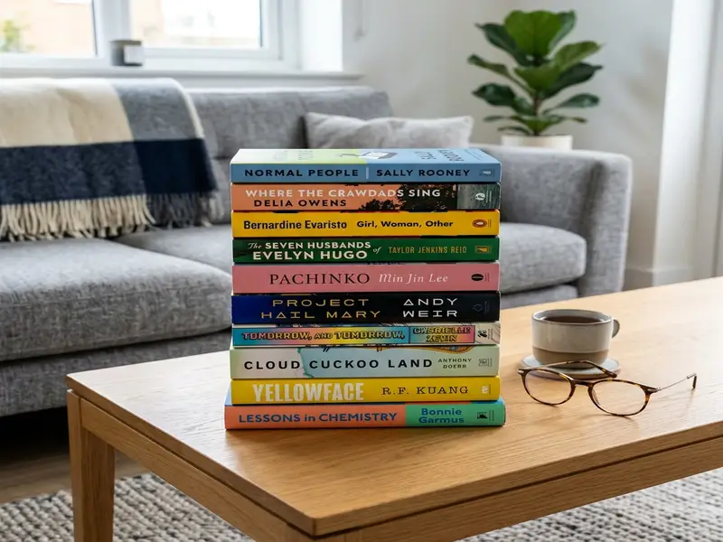

Why 'The Midnight Library' Resonates With Us
Exploring the profound themes of regret, parallel lives, and the choices we make in Matt Haig's phenomenal bestseller.
Read Full ArticleBook reviews, author interviews, and literary discussions.
We sat down with leading psychologists and top-selling authors to understand the visceral, adrenaline-fueled appeal of the modern psychological thriller.
Read the Deep Dive
Exploring the profound themes of regret, parallel lives, and the choices we make in Matt Haig's phenomenal bestseller.
Read Full Article
We sat down with the author of Atomic Habits to discuss system building, identity change, and his reading habits.
Read Full ArticleGrab a blanket and a cup of tea. These ten whodunnits provide the perfect blend of suspense and comfort for chilly evenings.
Read Full Article
Despite the digital age, physical books are seeing a massive renaissance. We explore the community-driven success of local shops.
Read Full Article
We dive deep into the creative process, world-building, and the legacy of the most beloved fantasy series of our generation.
Read Full ArticleRevisiting Frank Herbert's sci-fi epic and examining how its themes of ecology and politics remain astonishingly relevant.
Read Full ArticleTravel back in time with these meticulously researched and grippingly narrated tales from the 18th and 19th centuries.
Read Full Article
From intense thrillers to lighthearted rom-coms, discover the personal favorites currently on our nightstands.
Read Full ArticleWith over a decade of experience in traditional publishing, Elise brings a sharp, discerning eye to Stackly's literary blog. She curates every reading list, conducts our exclusive author interviews, and ensures our reviews meet the highest standards of literary critique.